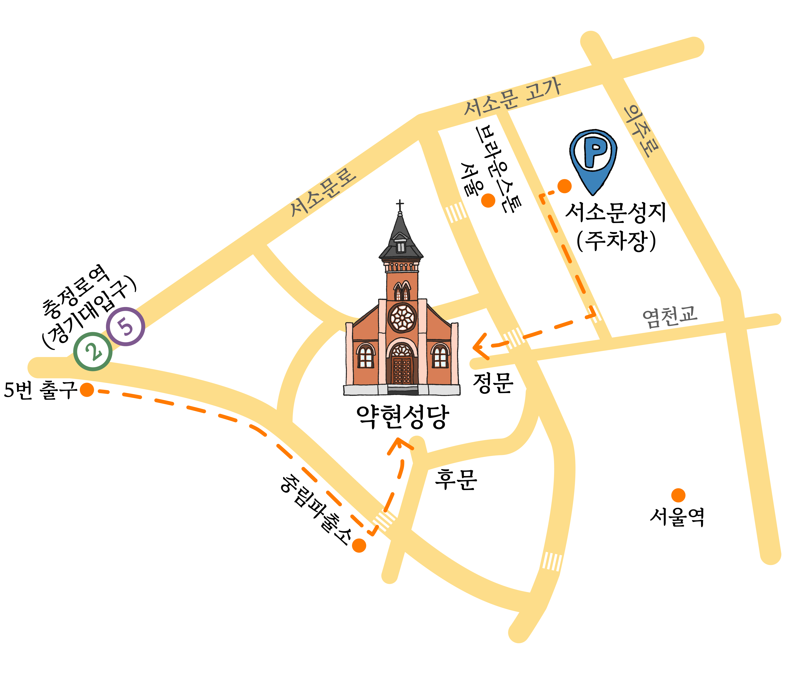

인삿말
사진
오시는 길
마음 보내는 곳
방명록
오시는길
약현성당
서울 중구 청파로 447-1

*도보로 가는 길
교통편
· 지하철
2호선, 5호선 충정로역 하차
5번출구로 나와 350m 직진, 중림파출소 맞은편 (도보 6분)
· 주차장
서소문성지 역사박물관 주차장 (주차권 제공)
서울 종로구 새문안로 55
: 주차장에서 약현성당 (도보 9분)
문의전화 : 010-5195-7470